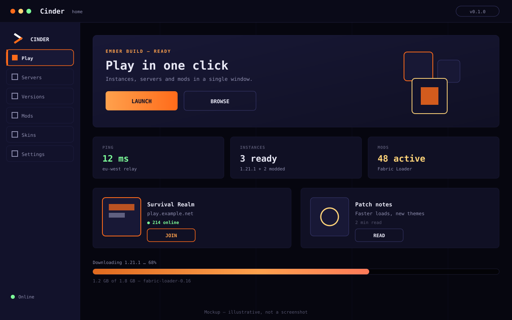

Open Minecraft launcher
Launch Minecraft your way — offline or premium.
Cinder is an open Electron launcher for Minecraft Java, made by radoslavgeme. Offline profiles with a built-in name forge, Microsoft login for premium play, one-click mod loaders, and Discord Rich Presence out of the box.
Latest release: v2.0.0 · Windows, macOS & Linux · Free and open source (MIT)

Why Cinder
Everything you need to play, nothing you have to fight
-
Offline + Microsoft sign-in
Offline profiles with a name forge that suggests guaranteed-valid names, plus Microsoft login with automatic token refresh for premium servers like Hypixel.
-
Fabric & Quilt auto-install
Mod loaders install themselves with one toggle — no manual jars, no JSON editing. Forge and NeoForge mismatches get a clear warning instead of a crash.
-
Modrinth mods in-app
Search Modrinth, pick a version, and manage your local list with enable/disable toggles — all without leaving the launcher.
-
World backups & restore
Singleplayer saves listed with size and date. Zip a backup in one click, restore the newest backup later, and your current world is kept as a timestamped copy.
-
Live server pings
Featured networks and your own servers show live players, MOTD, and ping — probed by a fast native helper with a pure-Node fallback, cached for 60 seconds.
-
3D skin previews
Preview any Java username live skin with an auto-spinning 3D view, load your own profile skin, or import a classic 64×64 PNG from disk.
Also inside: JVM presets, one-click diagnostics, and Discord presence. Read the full feature tour →